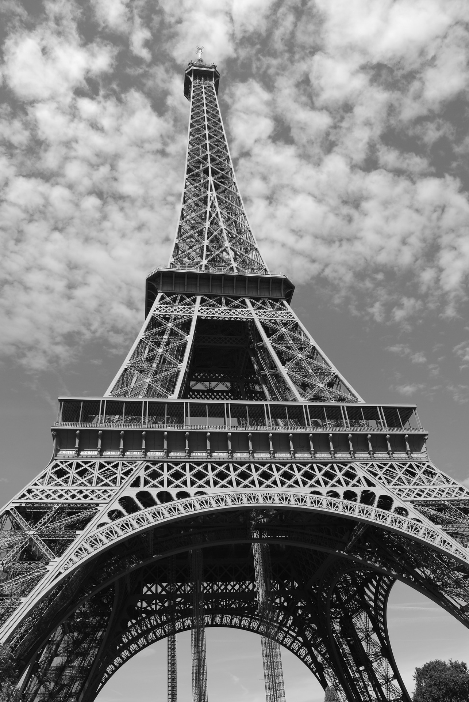

.jpg)
"ICI C EST PARIS"
La tour Eiffel Écouter est une tour de fer puddlé de 324 mètres de hauteur
(avec antennes)o 1 située à Paris, à l’extrémité nord-ouest du parc du Champ-de-Mars
en bordure de la Seine dans le 7e arrondissement. Son adresse officielle est 5, avenue
Anatole-France.
Construite en deux ans par Gustave Eiffel et ses collaborateurs pour l’Exposition
universelle de Paris de 1889, et initialement nommée « tour de 300 mètres », elle
est devenue le symbole de la capitale française et un site touristique de premier plan :
il s’agit du troisième site culturel français payant le plus visité en 2015, avec 5,9
millions de visiteurs en 20162. Depuis son ouverture au public, elle a accueilli plus
de 300 millions de visiteurs3.
D’une hauteur de 312 mètreso 1 à l’origine, la tour Eiffel est restée le monument le
plus élevé du monde pendant quarante ans. Le second niveau du troisième étage, appelé
parfois quatrième étage, situé à 279,11 mètres, est la plus haute plateforme d'observation
accessible au public de l'Union européenne et la deuxième plus haute d'Europe, derrière la
tour Ostankino à Moscou culminant à 337 mètres. La hauteur de la tour a été plusieurs fois
augmentée par l’installation de nombreuses antennes. Utilisée dans le passé pour de nombreuses
expériences scientifiques, elle sert aujourd’hui d’émetteur de programmes radiophoniques et télévisés.
"VIVE PARIS"

La tour construite par Gustave Eiffel pour l’exposition universelle de 1889
– qui marque le centenaire de la Révolution – et dont la destruction était
programmée 20 années après, est finalement conservée pour raison scientifique.
Les pieds du bâtiment coïncident avec les quatre points cardinaux, ils pèsent
plus de 10 000 tonnes, et c’est le monument le plus haut du monde jusqu’en 1931.
La Tour culmine à plus de 320 m depuis 1957, date à laquelle est hissée l’antenne
de diffusion de la télévision française. Depuis le deuxième étage, situé à 115 m
au-dessus du sol, on estime que l'on peut voir par temps clair jusqu'à 55 km au sud,
60 au nord, 65 à l'est et 70 à l'ouest. Le Jules-Verne, repris du groupe d'Alain Ducasse,
est un restaurant gastronomique ouvert sept jours sur sept et très couru. Le troisième
étage est un espace fermé ponctué de tables d'orientation, mais pourvu d'un étage
supérieur, totalement ouvert, avec la plus belle vue sur Paris. Si vous êtes courageux
pour pouvez gravir les 750 marches qui conduisent du bas au deuxième étage, c’est moins cher,
plus sportif et surtout c’est beaucoup plus rapide pour acheter les billets. Parmi les
nombreuses attractions de la tour, les boutiques, son bar à champagne au sommet et ses
nombreux points de restauration, dont son restaurant gastronomique, le Jules Verne. Sublime !